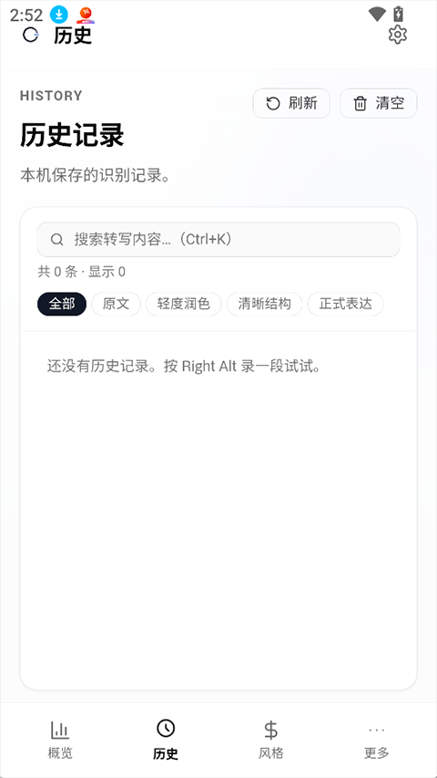

20 分钟上手 OpenLess——语音输入从下载到词典热词全流程
从下载安装 VS Code 无障碍配置到词典热词注入，跟着五步实操把 OpenLess 从装完到用顺手。
这篇教程带你从零把 OpenLess 从下载到配置到真正用起来——20 分钟后你能做到：桌面端热键录音转写、润色模型输出符合预期、专有名词不再被认错、VS Code 里光标上下文正常工作。

准备
OpenLess 覆盖四个平台：macOS、Windows、Linux、Android。桌面端靠 Tauri 2 打包一个轻巧壳，Android 端是自定义 IME（输入法）形态。Linux 比较特殊，官方在 v2.0 把 Tauri 方案替换成了 Rust egui 原生 Host，不依赖系统 WebKitGTK，但也没有 AppImage。
不管你在哪个平台，先去它的官网挑对安装包：macOS 分 Apple Silicon（M 系列）和 Intel 两档 DMG，Windows 是标准的 x64-setup.exe，Android 真机直接 arm64-v8a.apk，Linux 用户自己注意 glibc 版本最低要 2.39。
有两个前置条件要提前说清楚：
- 桌面端需要你愿意配置热键。OpenLess 的核心交互就是「按住热键说话、松开即转写润色」，热键冲突是新手最头疼的问题，安装完第一件事先把热键从默认 F1 换成你确定不会撞的组合。
- VS Code 用户必须先搞无障碍设置。Chromium 编辑器的无障碍树默认只有检测到辅助功能客户端时才保持光标位置同步，VS Code 不知道 OpenLess 在监听你，返回的光标位置很可能是过期的。这条后面专门用一步讲。
第一步：安装
Windows
双击 x64-setup.exe 走标准安装程序就行，装完托盘区会出现 OpenLess 图标。也可以命令行装：winget install --id OpenLess.OpenLess，一条命令搞定。应用内自带自动更新，后续不用管。
macOS
从下载页拿对应架构的 DMG，拖进 Applications 文件夹。每次更新后都要在终端跑 xattr -cr /Applications/OpenLess.app——当前是 ad-hoc 签名没做 Apple 公证，Gatekeeper 会把它当成「已损坏」直接打不开。这条是高频坑，十个 macOS 新手九个踩过。
Android
下载 arm64-v8a.apk（真机用户下这一个就对了），安装后去系统设置里把 OpenLess IME 设为默认输入法或者至少把热键或语音按钮激活。Android 端不需要额外配置光标上下文——自定义 IME 直接从 InputConnection 读光标前后文本，天然就支持。
Linux
下载 .deb 或 .rpm 手动装。没有 AppImage、没有应用内自动更新，版本更新全靠你自己盯着 GitHub Releases。最低要求 glibc ≥ 2.39，即 Ubuntu 24.04 及后续版本，老系统装不上别挣扎。
第二步：配置热键（桌面端）
托盘图标右键 → 设置 → 热键，把默认的 F1 换成一个你确定不会被别的软件占用的组合。建议 Ctrl + Shift + 空格 或者 Alt + 反引号 这种不会误触的。改完点保存，托盘区状态胶囊会显示新热键。
这里别急着点下一步。热键冲突是新手第一大翻车点——你以为按了热键在录音，其实是别的软件先拦截了。改完热键后，在记事本里测试一下：按住新热键说一句话，松开，看文本框里有没有出现转写结果。没有就是热键没生效，回去检查是不是某个全局快捷键（比如输入法切换、截图工具）抢了同一个组合。
第三步：VS Code 无障碍设置（如果你用 VS Code）
这一步只针对 Chromium 编辑器用户——VS Code、Cursor、Fleet、Codeium 这些都要做。JetBrains IDE（IntelliJ、PyCharm）、飞书、微信桌面客户端、原生记事本这些对无障碍 API 支持良好的应用不用管，直接跳过。
- 打开 VS Code 设置（
Cmd + ,/Ctrl + ,） - 搜索
accessibilitySupport - 把
editor.accessibilitySupport改成on（默认是auto） - 关闭 VS Code 窗口重新打开（某些版本需要 reload window）
改完之后，OpenLess 的光标上下文功能才能拿到当前真实的光标位置。不改的话，它可能返回上一次读取时的位置而不是你现在光标所在的地方——同音字消歧会经常出问题，润色结果里「挪深」变成「Notion」这种事就会越来越多。
第四步：加词典热词
ASR 对专有名词的识别永远是老大难。产品名、人名、公司名、技术术语——这些词 ASR 要么直接转成同音字，要么转成语义完全不通的东西。词典热词的作用是把正确拼写注入到 ASR 识别阶段（优先匹配）和润色模型（语义提示不要改错）。
操作步骤：
- 打开 OpenLess → 词典 tab
- 点「新建」→ 填入正确拼写（比如
Claude、Notion、OpenLess）、可选加分类和备注 - 确保词条是启用状态（开关打开，默认识别之后自动开启）
- 重新录一段包含这个词的语音，看是否还错

这里有个实验性功能值得提一下：如果你在「设置 → 实验与扩展 → 从纠正自动学习」里开启了自动学习，那么当你手动把 ASR 识别错的词改成正确拼写时，OpenLess 会弹出一个小卡片问你要不要记住这个词，点一下就自动加入词典。不用每次跑回词典 tab 手动新建。
但自动学习是实验功能，不是所有编辑器都能被可靠观察，某些边缘情况可能误判。建议先手动加几条高频专有名词打底，再试试自动学习能帮你省多少事。
第五步：选输出模式
OpenLess 有五种输出模式（四个默认 + 翻译），每种对口语的处理方式完全不同：
- 清晰结构（AI Prompt）：重组式，把你说的口语重写成结构化 Prompt 或清单。适合你口述任务、口述待办清单的时候用。
- 轻度润色：清理式，只去掉语气词、重复词、停顿词，保留原意。适合你口述一段话、想让文字干净利落但不想被过度改写。
- 正式表达：风格化，润色成书面语。适合邮件、文档、正式沟通场景。
- 原文：完全不润色，直接输出 ASR 转写。适合转写质量本来就很高、或者你想自己手动编辑的场景。
- 翻译：把转写结果翻译成指定语言。
快速切换有三种方式：托盘图标右键菜单、状态胶囊上滚动滚轮、主窗口概览页的模式切换器。我个人建议新手先从轻度润色开始——既能去掉口语里的"嗯、啊、那个、然后"，又不会过度改写偏离原意。等你对 OpenLess 的输出质量有了感觉，再根据不同场景切换。
如果默认四种模式都不对你的路子，可以去「风格 → 风格市场」搜社区风格包，或者自己新建一个风格包写自定义 system prompt。风格包的灵活度比输出模式高得多——格式、语气、术语处理、长度限制，全部可以自己写，详细的风格包创建步骤和自定义模板示例在文档里有完整章节。
常见卡点
卡点一：润色结果感觉不对
按这个顺序排查：
- 换输出模式试试：清晰结构是「重组」，轻度润色是「清理」，重组可能过度改写，清理又可能保留太多原意。切另一个看看。
- 词典里加相关专有名词：如果是某个词被改错了（比如人名、产品名），基本就是词典没收录这个词。跑回词典 tab 加进去。
- 换润色 LLM：不同 LLM 对同一个 prompt 的理解差异很大。太啰嗦就换更强的模型（豆包 Pro、DeepSeek chat），结构不够清晰就换更擅长结构化输出的模型，同音字经常改错就开启光标上下文 + 换强模型。
卡点二：VS Code 里同音字消歧经常错
大概率是第三步的无障碍设置没做。回到 VS Code 设置把 editor.accessibilitySupport 改成 on，reload window。光标上下文依赖真实的光标位置来判断你当前在写什么词、前后有什么文本——位置不准，消歧就无从谈起。
卡点三：macOS 更新后 OpenLess 打不开
就是前面说的 Gatekeeper 签名问题。终端里跑 xattr -cr /Applications/OpenLess.app，跑完就能正常打开。每次更新 DMG 都要跑一次，因为新版本还是 ad-hoc 签名，Gatekeeper 会重新标记。
进阶一句话
等你跑通了以上五步，想继续往下玩的话，有两个方向值得试：一是开启光标上下文后观察同音字消歧的实际改善幅度（中文场景特别明显），二是写两三个自定义风格包，分别给邮件、技术文档、commit message 这些高频场景预置好格式和语气规则。
本文档的开放源码同时托管在GitHub、Gitee、GitCode三个平台，主要考虑到国内网络访问 GitHub 偶尔不太稳定以及多仓库备份的冗余性——你在任一个仓库都能找到完整的 OpenLess 中文文档目录。